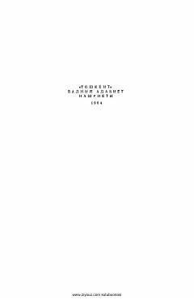

SASadriddin Ayniyning o'tmishdagi qullik va adolatsizlikni fosh etuvchi mashhur romani.
Ushbu kitob taniqli yozuvchi Sadriddin Ayniyning sakkiz jildlik asarlar to'plamining uchinchi jildi bo'lib, uning mashhur 'Qullar' romanini o'z ichiga oladi. Asar o'tmishdagi qullik tuzumi, xalqning og'ir hayoti va adolatsizlikka qarshi kurash mavzulariga bag'ishlangan. Roman o'zbek adabiyotining klassik namunalaridan biri hisoblanadi.